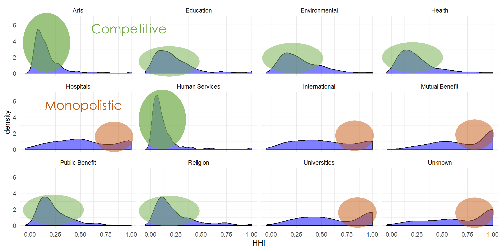

R package to generate metrics describing competition in nonprofit markets.
devtools::install_github( 'nonprofit-open-data-collective/npcompete' )
library( npcompete )
# compute revenue HHI for metros and subsectors:
data( nonprofit_sample )
dat.hhi <- get_hhi( df=nonprofit_sample,
geo='MSA_NECH',
subsector='NTMAJ12',
resource='TOTREV'
resource.name='Revenue' )
head( dat.hhi )
HHI output for the sample data
The package will generate the following competition metrics:
- HHI
- Normalized HHI
- CR1 to CR8
- kindex
- gini coefficient
- density rate (nonprofits per capita)
- density of small nonprofits
- “density of large nonprofits
- “density of commercial nonprofits
…
To access the pre-compiled np-compete.csv dataset in the data-share folder.